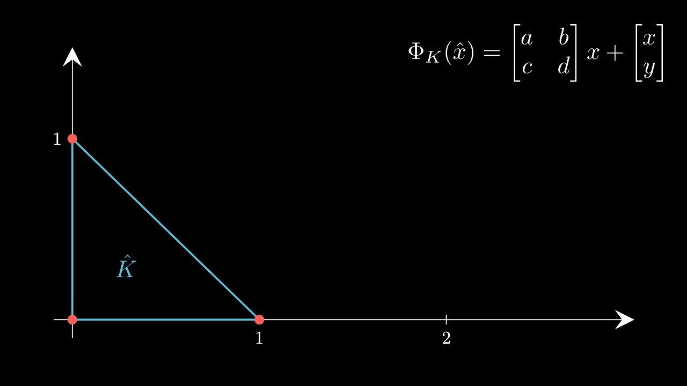
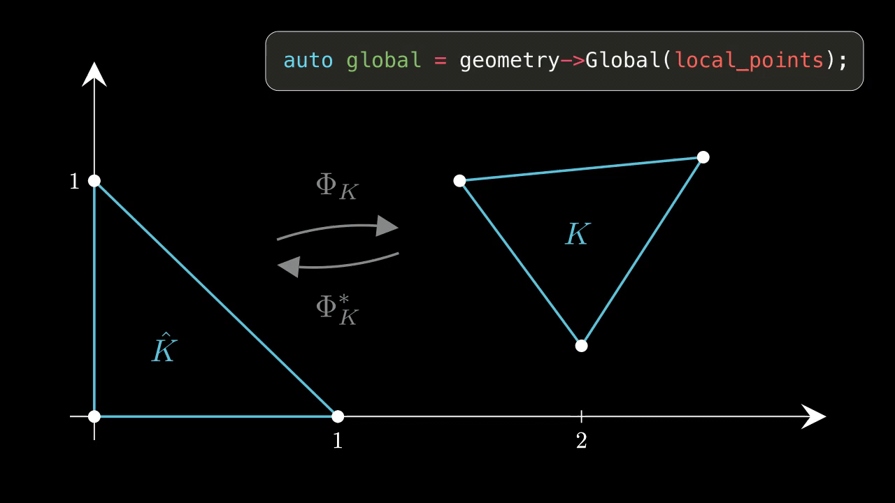

Edit on GitHub
- Attention
- The content of this page is discussed in Lecture Document Section 2.8. Please read before using quick reference.
Overview
LehrFEM++ provides an interface for geometry data: lf::geometry::Geometry. Geometry data for entities is stored as a mapping \( \Phi_K(\hat{x}) \) from the reference element (unit triangle, square, unit segment) to any general element. \( \Phi_K^{*}(\hat{x}) \) represents the inverse mapping from the general element to the reference element.
For any one element, it is enough to store the mapping \( \Phi_K(\hat{x}) \) from the reference element and the type of the reference element.

(Affine) Geometry Mapping for Triangles
More details and mathematical background can be found in Lecture Document Section 2.8.
Geometry Interface
To get the geometry of an entity:
}
Interface class for shape information on a mesh cell in the spirit of parametric finite element metho...
Interface class representing a topological entity in a cellular complex
Utility Functions
A number of convenience functions are provided by the Geometry class.
Eigen::MatrixXd Corners(const Geometry &geo)
The corners of a shape with piecewise smooth boundary.
double Volume(const Geometry &geo)
Compute the (approximate) volume (area) of a shape.
In addition, we can test for some properties of the geometry:
bool assertNonDegenerateTriangle(const Eigen::Matrix< double, Eigen::Dynamic, 3 > &coords, double tol)
Asserting non-degenerate shape of a flat triangle.
bool assertNonDegenerateQuad(const Eigen::Matrix< double, Eigen::Dynamic, 4 > &coords, double tol)
Asserting a non-degenerate bilinear quadrilateral.
Geometry Methods
Objects implementing the lf::geometry::Geometry interface provide the following methods:
unsigned dim_local = geometry->
DimLocal();
Represents a reference element with all its properties.
virtual base::RefEl RefEl() const =0
The Reference element that defines the domain of this mapping.
virtual dim_t DimLocal() const =0
Dimension of the domain of this mapping.
virtual dim_t DimGlobal() const =0
Dimension of the image of this mapping.
virtual bool isAffine() const
element shape by affine mapping from reference element
Transformations and Mappings
This part is discussed in detail in Lecture Document Section 2.8. Usage of the following methods is discussed in the Assembly Quick Reference.
- Note
- The following methods accept a matrix of points in the local coordinate system as input. The points are stored in a matrix where each column represents a point. The number of rows corresponds to the dimension of the local coordinate system.
Global
The lf::geometry::Geometry class provides the lf::geometry::Geometry::Global method to map points from local to global coordinates. In LehrFEM++, local points generally refer to points on the reference element.
Eigen::MatrixXd local_points(2, 2);
local_points << 0.1, 0.5,
0.6, 0.2;
Eigen::MatrixXd global = geometry->
Global(local_points);
virtual Eigen::MatrixXd Global(const Eigen::MatrixXd &local) const =0
Map a number of points in local coordinates into the global coordinate system.

Mapping of points from local to global coordinates
IntegrationElement
The method lf::geometry::Geometry::IntegrationElement computes the integration element
\[ g(\xi) := \sqrt{\mathrm{det}\left|D\Phi^T(\xi) D\Phi(\xi) \right|}
\]
for each point in points as an Eigen::VectorXd.
virtual Eigen::VectorXd IntegrationElement(const Eigen::MatrixXd &local) const =0
The integration element (factor appearing in integral transformation formula, see below) at number of...
- Note
- The following two methods return a matrix for each evaluated point. For efficiency reasons, the returned matrices are horizontally stacked. The number of rows corresponds to the dimension of the global coordinate system.
Jacobian
The method lf::geometry::Geometry::Jacobian computes the Jacobian matrix \( D\Phi(\hat{x}) \) for each point in points.
Eigen::MatrixXd jacobian = geometry->
Jacobian(local_points);
virtual Eigen::MatrixXd Jacobian(const Eigen::MatrixXd &local) const =0
Evaluate the jacobian of the mapping simultaneously at numPoints points.
The Jacobian evaluated at every point is itself a matrix of size dim_global x num_points. The JacobianInverseGramian evaluated at every point is a matrix of size dim_local x (dim_global * num_points). To access the Jacobian at a specific point, use the following code:
unsigned dim_local = geometry->
DimLocal();
Eigen::MatrixXd jacobian_n = jacobian.block(0, n * dim_local, dim_global, dim_local);
If dim_local == dim_global == 2 and we pass three points for evaluation, Geometry::Jacobian returns a \( 2 \times 6 \) matrix:
Block matrix returned by Geometry::Jacobian
To access the Jacobian for the second point, we can use Eigen block access:
Eigen::MatrixXd jacobian_2 = jacobian.block(0, 2, 2, 2);
JacobianInverseGramian
The method lf::geometry::Geometry::JacobianInverseGramian computes the inverse of the JacobianInverseGramian matrix for each point in points. Details can be found in Lecture Document Paragraph 2.8.3.14 and the method docs. Similarly to Geometry::Jacobian, it also returns a horizontally stacked matrix. Individual matrices can be accessed using Eigen block.
Eigen::MatrixXd jacobian_inv_n = jacobian_inv.block(0, n * dim_local, dim_global, dim_local);
virtual Eigen::MatrixXd JacobianInverseGramian(const Eigen::MatrixXd &local) const =0
Evaluate the Jacobian * Inverse Gramian ( ) simultaneously at numPoints.